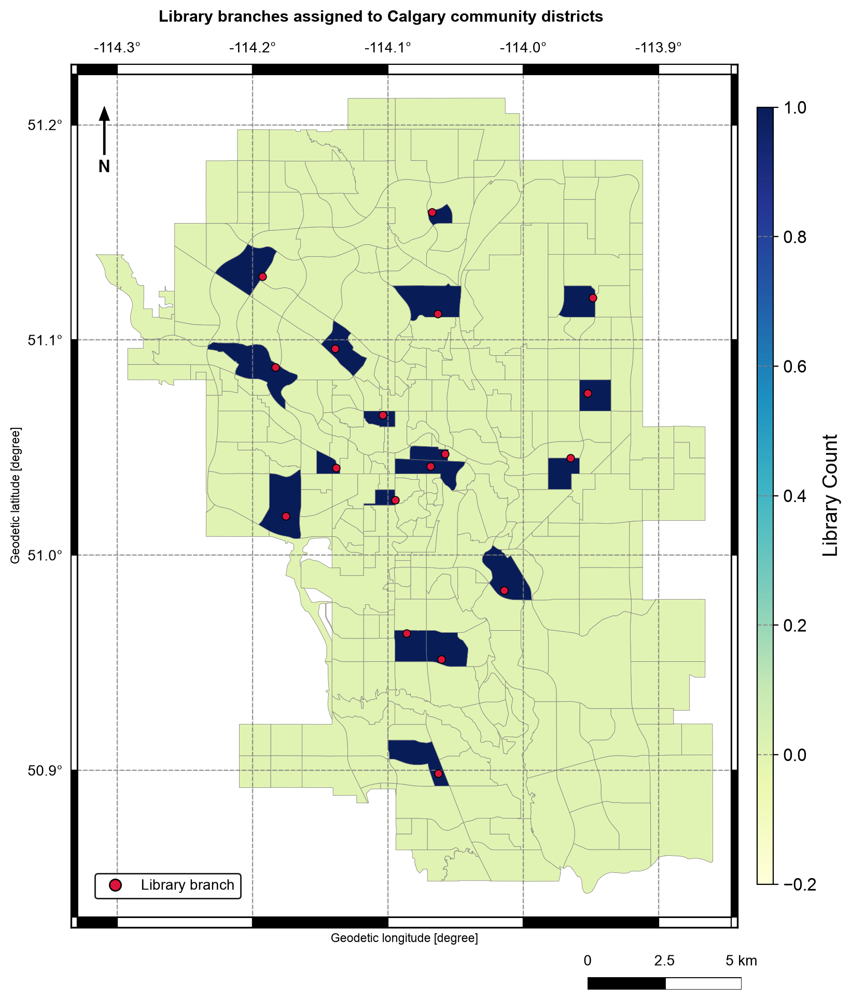

4.3. Attribute and Spatial Joins#
4.3.1. Learning objectives#
By the end of this section, you should be able to:
distinguish a relational join from a spatial join;
describe key cardinality, and declare and validate it with
validate=;preserve identifier types so keys actually match;
explain what
gpd.sjoinreturns: its rows, columns, and index;explain the left, right, and inner join modes of
gpd.sjoin;choose a spatial predicate such as
withinorintersectsdeliberately;report unmatched and duplicated records; and
aggregate joined results without double-counting features.
Section goal
Join Calgary library records to a small lookup table, then locate libraries inside community districts. The left-hand layer remains the unit of analysis, so every change in row count has to be explainable.
4.3.2. Two kinds of matching#
An attribute join [Codd, 1970] compares values in columns, such as a branch identifier or postal
prefix. A spatial join compares geometries, such as a point being within a
district. Both families raise the same row-semantics question: which input controls the
retained records, and can one row match many? Table 4.13
summarizes the three join modes.
Mode |
Rows retained |
Typical use |
|---|---|---|
|
Every left row; unmatched right columns are null |
Keep the unit of analysis complete |
|
Every right row; unmatched left columns are null |
Inventory the right layer |
|
Only rows with a match on both sides |
Analyze matched pairs only |
how='left' means that the left layer controls which records are retained; it does not
mean that every record must find a match. Spatial joins can also be one-to-many: a point
on a shared boundary may match more than one polygon with intersects, and overlapping
polygons can duplicate a left feature. Use a unique identifier and an explicit
aggregation rule when counting.
4.3.3. Keys and cardinality#
An attribute join pairs rows whose key values are equal. Two properties of the keys decide whether the result can be trusted.
The first is cardinality: how many rows on each side may share one key value.
Table 4.14 lists the four cases and the matching validate=
argument of DataFrame.merge [McKinney, 2010].
Relationship |
Key is unique on |
Example |
|
|---|---|---|---|
One to one |
Both sides |
A district and its row in a count table |
|
Many to one |
The right side only |
Branches looked up in a postal-area table |
|
One to many |
The left side only |
A district and the libraries inside it |
|
Many to many |
Neither side |
Rarely intended; it multiplies rows |
|
A many-to-one lookup is the usual design. When the lookup accidentally holds a duplicate key, each matching left row is copied once per duplicate, which is called fan-out, and every later count is inflated. Declaring the expected relationship makes pandas raise an error instead of continuing quietly.
The second property is the key type and form. Values must match exactly: '0' is
not 0, and 'T2G ' is not 'T2G'. pandas refuses to merge an integer key with a text
key, but a trailing space or a case difference simply fails to match, and the rows fall
out as nulls in a left join or disappear in an inner join. Normalize keys (text type,
stripped, one case) before merging. The toy tables below show each failure.
left merge: 5 rows from 4 branches
inner merge: 4 rows from 4 branches
MergeError: Merge keys are not unique in right dataset; not a many-to-one merge
ValueError: You are trying to merge on int64 and str columns for key 'key'
The left merge turns four branches into five rows because the lookup repeats T2J. The
inner merge returns four rows only by coincidence: it drops Nose Hill, which has no
match, and duplicates Fish Creek, so the two errors cancel. An unchanged row count does
not prove a clean join, which is why the declared validate= check and the unmatched
count both matter.
4.3.4. Load the layers#
The next cell loads the library and community layers [Open Calgary: The City of Calgary Open Data Portal, 2026] with the same parsing as
S01, keeps a stable branch_id and community_id, and derives the
three-character postal area used as the join key below.
libraries: 18 communities: 313
4.3.5. Attribute join with declared cardinality#
The lookup below is derived from the library table only to keep this notebook
reproducible; in a real project it could be a separately maintained table. Each
postal_area occurs once in the lookup, so many library rows may match one lookup row:
many_to_one is the intended relationship. Declaring it with validate= turns a silent
fan-out mistake into an explicit error. Every postal area here happens to hold a single
branch, so each looked-up count is 1; the point is the declared relationship and the
unchanged row count, not the values.
Library postal_area branches_in_postal_area
0 W.R. Castell Central Library T2G 1
1 Alexander Calhoun Library T2T 1
2 Bowness Library T3B 1
3 Fish Creek Library T2J 1
4 Forest Lawn Library T2A 1
5 Glenmore Square Library T2C 1
6 Louise Riley Library T2N 1
7 Memorial Park Library T2R 1
8 Nose Hill Library T2L 1
9 Shawnessy Library T2Y 1
10 Signal Hill Library T3H 1
11 Southwood Library T2W 1
12 Judith Umbach Library T2K 1
13 Village Square Library T1Y 1
14 Crowfoot Library T3G 1
15 Country Hills Library T3K 1
16 Saddletowne Library T3J 1
17 Westbrook Library T3C 1
4.3.6. How a spatial join works#
A spatial join replaces the key comparison with a predicate: two rows are matched when
the stated relationship between their geometries holds, using the relationships from
S01. gpd.sjoin(left, right, how=, predicate=) [Jordahl et al., 2020] follows the filter and
refine steps from S02: a spatial index [Guttman, 1984, Leutenegger et al., 1997] on the right layer finds candidate pairs by bounding box, and the exact predicate then runs on those candidates.
The result has a predictable shape:
Rows: one row per matching pair. A left row with k matches appears k times, and one with no match appears once with null right columns in a left join, or not at all in an inner join.
Columns: every left column, then the right columns, plus
index_right, the row label of the matching right feature. Clashing names receive_leftand_rightsuffixes. A left or inner join keeps the left geometry; a right join keeps the right geometry.Index: a left join keeps the left index, so a repeated index label marks a fan-out.
Unlike merge, sjoin has no validate= argument, so row counts, duplicated identifiers,
and unmatched rows must be checked by hand. A predicate is also all-or-nothing: a point
just outside a polygon, because of a digitising gap or a coastline, is unmatched, not
assigned to the nearest polygon. gpd.sjoin_nearest, used in S02, assigns the nearest
match when that is the rule you actually want.
Four toy points and three toy districts make the rules visible. Point p2 sits on the
edge shared by districts A and B, p4 is outside every district, and district C holds no
point.
left within rows=4
inner within rows=2
right within rows=3
left intersects rows=5
point_id index_right district
0 p1 0.0 A
1 p2 0.0 A
1 p2 1.0 B
2 p3 1.0 B
3 p4 NaN NaN
With within, p2 is unmatched because it lies on the boundary, not in the interior of
either district, and p4 is unmatched because it lies outside all of them; the inner join
drops both, and the right join keeps district C although no point reached it. With
intersects, p2 matches both A and B, so four points produce five rows and the index
label 1 appears twice. The predicate is therefore a decision about boundary contact. For
a rule that assigns every point to exactly one district, within and intersects both
need a tie-break, such as keeping the first match or using sjoin_nearest.
4.3.7. Spatial join: libraries within community districts#
The library points are the left layer and the district polygons are the right layer. The predicate is the analytical choice, and Table 4.15 lists the options.
Predicate |
Matches when |
Use it for |
|---|---|---|
|
the left geometry is inside the right geometry, excluding its boundary |
Assigning points to exactly one district |
|
the geometries share any point, including the boundary |
Cases where boundary contact should count |
|
the left geometry contains the right geometry |
Polygon-first questions, with polygons as the left layer |
|
the geometries are within |
Proximity joins in a projected CRS |
A point that lies exactly on a polygon boundary is not within it [Herring, 2011]; use intersects
when boundary contact should count. Both layers are already in EPSG:4326, but a CRS
comparison should still be part of a reusable workflow.
output rows: 18
unmatched libraries: 0
duplicate branch matches: 0
Library NAME
0 W.R. Castell Central Library DOWNTOWN COMMERCIAL CORE
1 Alexander Calhoun Library SOUTH CALGARY
2 Bowness Library BOWNESS
3 Fish Creek Library WILLOW PARK
4 Forest Lawn Library FOREST LAWN
All 18 libraries land in exactly one district, with no unmatched rows and no duplicate matches. A branch’s name need not match its district’s: Fish Creek Library sits in Willow Park and the Alexander Calhoun Library in South Calgary, so the assignment comes from geometry, not from names.
4.3.8. Compare join modes and predicates#
Running the same layers under the three join modes exposes what each one preserves. An
inner join drops unmatched left rows without any warning, which is why a left join is
the safer default when the left layer is the unit of analysis. Comparing within with
intersects shows how boundary contact changes the result.
left rows: 18 (every library kept)
inner rows: 18 (unmatched libraries dropped)
right rows: 313 (every district kept)
districts with no library: 295
extra boundary matches from intersects: 0
In this dataset every library falls inside exactly one district, so the inner join keeps
all 18 rows and intersects adds no matches. The right join shows the other side: 295
of the 313 districts contain no library. With other layers, the same code can drop or
duplicate left rows, which is why the counts are worth printing.
4.3.9. Aggregate without double-counting#
Counting after a join means choosing the unit being counted. size() counts joined rows,
whereas nunique() on an identifier counts distinct features. The two agree only when
no fan-out occurred. In the toy join above, each district’s count is correct on its own,
because p2 really does touch both A and B, but adding the district counts together
counts p2 twice.
joined rows: 5
rows per district: {'A': 2, 'B': 2}
sum of district counts: 4
distinct points matched: 3
4.3.9.1. Library counts by district#
A count should name its unit. Here the unit is a library branch, not a row in the joined
result. nunique() protects the count if a later predicate or an overlapping district
layer produces several matches for one branch. A left merge followed by fillna(0) then
gives every district an explicit zero when no library was assigned. The map after the
checks shows the resulting counts by district.
count 313.000000
mean 0.057508
std 0.233183
min 0.000000
25% 0.000000
50% 0.000000
75% 0.000000
max 1.000000
Name: library_count, dtype: float64
The mean of 0.0575 is simply 18 districts out of 313 (5.75%), and the median, quartiles, and minimum are all 0, so this count is dominated by zeros. A district average of 0.06 libraries is a poor summary of such a layer, and the map or a table of the 18 districts says more.


Fig. 4.6 Number of library branches assigned to each Calgary community district by a left spatial join with the within predicate. Data: City of Calgary Open Data.#
In Fig. 4.6, 18 districts are shaded dark because each
holds one library, while the other 295 are pale because they hold none. Every black
point lies inside a dark district, which is what the within join found. The legend
runs continuously from 0 to 1 even though a count here is only ever 0 or 1, so read the
map as two classes.
4.3.10. Common pitfalls#
Silent fan-out: a duplicated key or overlapping right polygons multiply left rows. Check
branch_id.duplicated().sum()after every join.Dropped rows: inner joins and
dropna()remove records without reporting them. Print unmatched counts before aggregating.Mismatched key types: a postal code read as an integer in one table and text in another will not match. Normalize key types first.
Near-miss keys: trailing spaces and case differences do not raise an error; they appear as nulls after a left join.
Boundary points:
withinleaves them unmatched andintersectsmatches them to every polygon they touch. Choose a rule deliberately.No built-in check on
sjoin: it has novalidate=, so compare row counts and duplicated identifiers yourself.Degree-based distance joins:
dwithinuses CRS units, so run it in a projected CRS when the threshold is in metres.Counting the wrong column: count unique branch identifiers, not joined rows.
4.3.11. Summary#
Attribute joins use keys; spatial joins use predicates. Choose the join mode from the layer that must be preserved, declare the expected cardinality, preserve a stable identifier, normalize key types, align CRSs, and report unmatched or duplicated rows before aggregating. A spatial join returns one row per matching pair, so boundary contact and overlapping polygons can multiply left rows, and counts should name their unit. Continue with S04 for operations that split and combine areas.